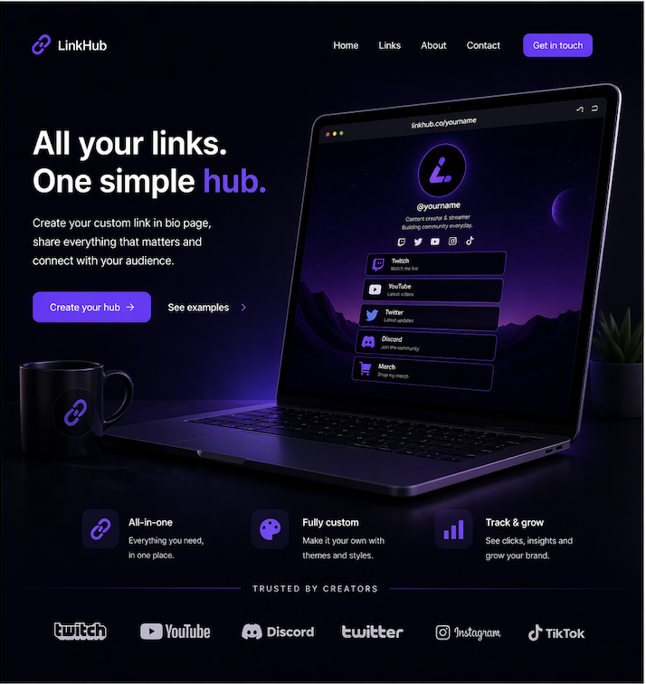
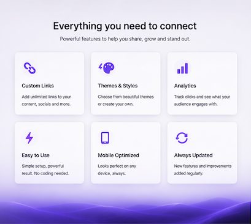
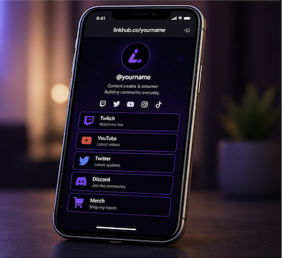

The Goal
Create a cleaner, more branded alternative to generic link tools so creators can guide visitors through their world in a way that feels intentional and premium.
A custom, branded link page designed for creators who want a cleaner and more premium alternative to generic bio tools.
Project showcase
This concept is designed to feel cleaner, more premium and more branded than a generic bio page, with stronger hierarchy and a more intentional creator-first layout.



Case study
Create a cleaner, more branded alternative to generic link tools so creators can guide visitors through their world in a way that feels intentional and premium.
Use strong visual hierarchy, better spacing, branded styling and a more focused layout so every link feels connected to the creator instead of looking like a basic list.
A creator link hub that feels more polished, more memorable and better designed to keep attention while making it easier for people to click through to the right platforms.
Why it works
The page feels more like part of the creator’s world, giving visitors a stronger first impression than a basic list of links.
Better hierarchy and spacing make it easier for people to move through the page and find the right platform faster.
Every visual choice supports a more polished identity, helping the creator feel more memorable and more established online.
Build your own version
I can create a custom version designed around your content, audience and creator identity so every click feels more intentional.
Fast turnaround • Fully custom • Built for creators
Start Your Project